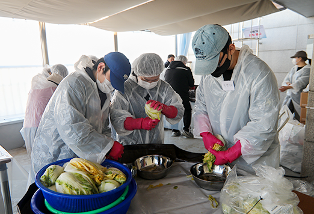
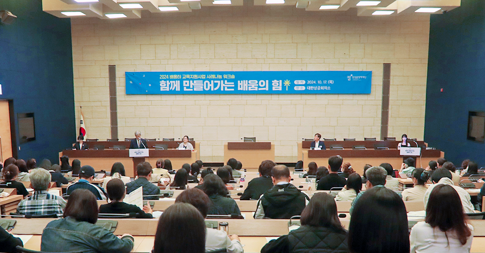
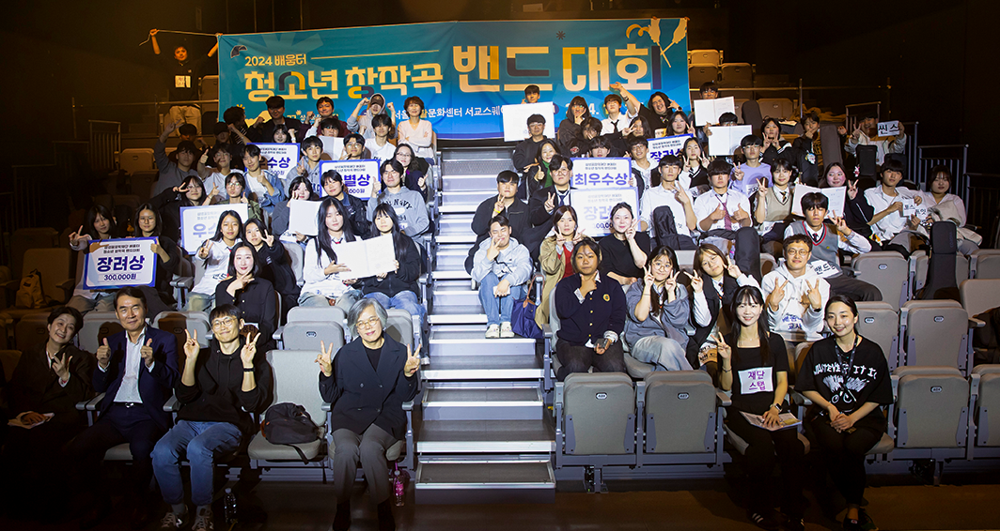
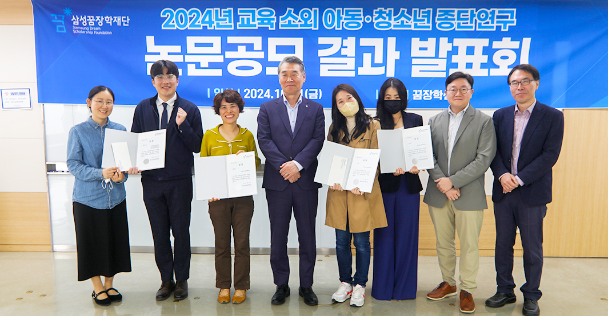
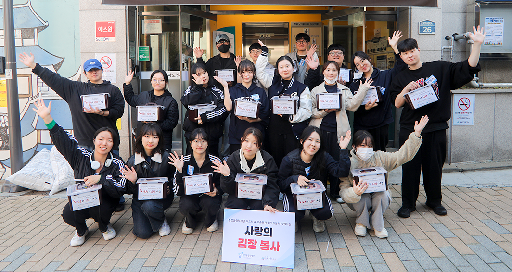

사람을 통해 사랑을 키우고
사람에 맞게 배우고 나아가고
사람과 사람과의 정서적인 교감과 소통을 통해 꿈을 향해 나아갑니다
장학재단 활동
-
멘토링 꿈장학사업
장학생 스스로의 힘을 이끌어낼 ‘멘토링 소통법’을 배우다
삼성꿈장학재단은 ‘2024년 꿈장학 멘토 워크숍’을 지난 7월 13일 재단 꿈장학센터에서 개최했다. 멘토 선생님에게 멘토링 꿈장학 사업을 이해하고 장학생을 멘토링하는데 실질적인 도움을 주고자 마련된 이날 워크숍에는 전국 각지에서 60여명의 멘토 교사들이 참여했다.
-
배움터 교육지원사업
글로벌 희망장학생들이 함께 만들어갈 꿈의 시너지
삼성꿈장학재단은 지난 2024년 9월 6일 재단 회의실에서 ‘2024년 2학기 글로벌 희망장학 증서수여식 및 오리엔테이션’을 진행했다. 2학기에 글로벌 희망장학생으로 선정된 신규 장학생들이 한자리에 만나 서로를 축하하고, 장학생 간 네트워크를 활성화하기 위해 마련된 이날 행사는 환영인사, 장학증서 수여, 장학생 소개, 오리엔테이션, 장학생 임원단 및 동아리 소개, 질의응답 등의 순서로 진행됐다.
-
꿈장학 포럼
‘함께’의 힘을 아는 청소년들의 다채로운 교류 현장
삼성꿈장학재단은 지난 8월 13일, 재단 연수실에서 ‘2024년 지역교육네트워크 청소년 대표단 모임’을 개최했다. 지역교육네트워크 사업 내에서 청소년 동아리 활동을 공유하고 배움터 장학생 간의 네트워크를 형성하고자 마련된 이번 행사는 개회 및 환영사, 청소년 동아리 발표, 소그룹 활동 및 결과 공유 등의 순서로 진행됐다.
-
리더육성 장학사업
온·오프라인 ‘우리 동네’에서 다 같이(多가치) 성장하는 우리들
콩나물은 올해 3개의 참여기관(푸른꿈지역아동센터, 위드라잇, 한국디베이트전문가협회)과 함께 배움터 교육복지 공동사업으로 ‘너+나=우리–관계형성’ 프로그램을 진행하고 있다. 콩나물은 2014년 남양주 지역의 중학생이 주축이 되어 설립한 비영리 단체다. 중학교 진로수업을 담당하던 안인환 선생님이(현 콩나물 대표) 봉사활동 동아리를 담당하게 됐을 때 아이들이 ‘우리가 하고 싶은 봉사활동을 직접 만들어서 하면 안 돼요?’라고 질문했던 것이 설립 계기가 됐고, 실제로 학생들이 직접 세무서에 가서 자신들의 이름으로 단체등록을 했다.
-
꿈장학 공모전 당선작① - 멘토 수기 부문
글로벌 희망장학생들이 함께 만들어갈 꿈의 시너지
콩나물은 올해 3개의 참여기관(푸른꿈지역아동센터, 위드라잇, 한국디베이트전문가협회)과 함께 배움터 교육복지 공동사업으로 ‘너+나=우리–관계형성’ 프로그램을 진행하고 있다. 콩나물은 2014년 남양주 지역의 중학생이 주축이 되어 설립한 비영리 단체다. 중학교 진로수업을 담당하던 안인환 선생님이(현 콩나물 대표) 봉사활동 동아리를 담당하게 됐을 때 아이들이 ‘우리가 하고 싶은 봉사활동을 직접 만들어서 하면 안 돼요?’라고 질문했던 것이 설립 계기가 됐고, 실제로 학생들이 직접 세무서에 가서 자신들의 이름으로 단체등록을 했다.